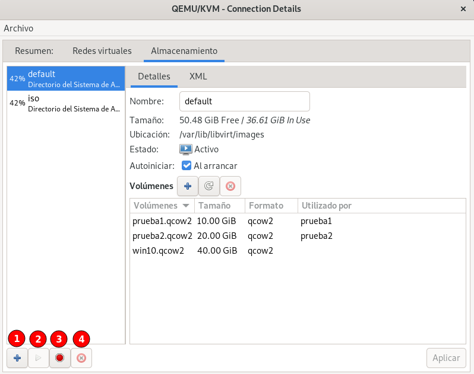
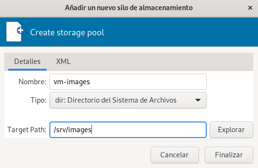
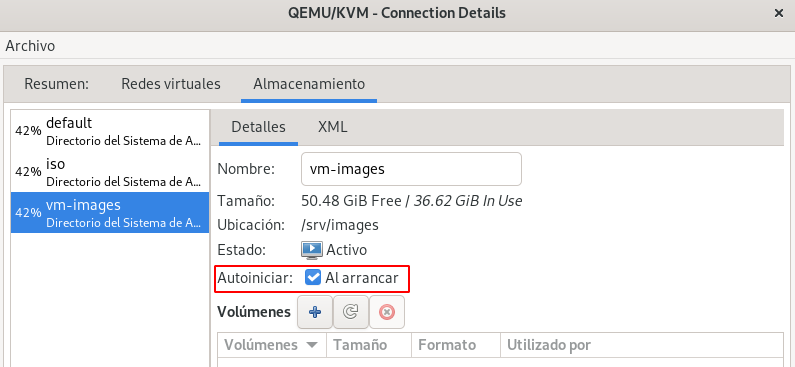
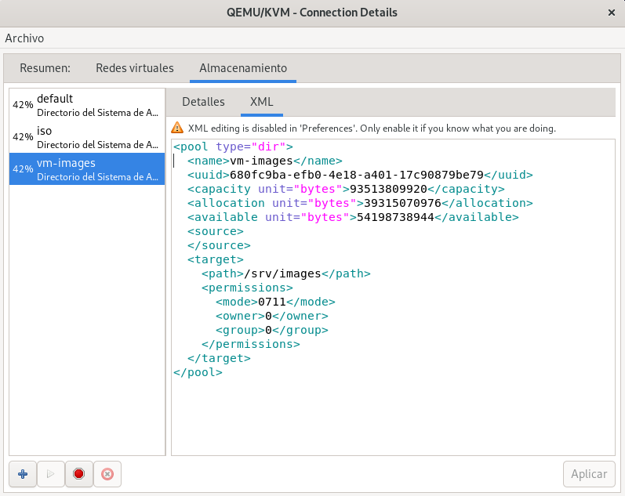

03.-Gestión de Pools de Almacenamiento
Gestión de Pools de Almacenamiento con virsh¶
Como hemos visto durante este curso tenemos a nuestra disposición dos Pool de Almacenamiento, para ver los pools con la herramienta virsh, ejecutamos la siguiente instrucción:
virsh -c qemu:///system pool-list
Nombre Estado Inicio automático
---------------------------------------
default activo si
iso activo si
Recuerda que el pool por defecto donde se guardan las imágenes de disco, es default. Podemos obtener información de ese pool con la instrucción:
virsh -c qemu:///system pool-info default
Nombre: default
UUID: 0a03e05b-8844-4029-8216-430fc289fe8f
Estado: ejecutando
Persistente: si
Autoinicio: si
Capacidad: 87,09 GiB
Ubicación: 36,61 GiB
Disponible: 50,48 GiB
Al igual que las máquinas virtuales, los Pools de Almacenamiento se definen por un documento XML. Para ver la definición XML del pool default podemos ejecutar virsh -c qemu:///system pool-dumpxml default. A partir de un fichero XML con la definición de un nuevo pool, podríamos crearlo con el subcomando virsh pool-define.
Nota: Para profundizar en el formato XML que define los Pools de Almacenamiento puedes consultar la documentación oficial: Storage pool and volume XML format.
Sin embargo, vamos a usar otro comando que nos permite indicar la información del nuevo pool por medio de parámetros. Vamos a crear un nuevo pool que vamos a llamar mv-images, de tipo dir y cuyo directorio será /srv/images. Supongamos que hemos añadido más almacenamiento al host y que hemos montado el disco en el directorio /srv/images y queremos guardar las imágenes de disco en esa nueva localización. Para crear el nuevo pool, de forma persistente ejecutamos:
virsh -c qemu:///system pool-define-as vm-images dir --target /srv/images
El grupo vm-images ha sido definido
Nota: Si utilizamos pool-create o pool-create-as, el pool se crea temporalmente, no será persistente y después de un reinicio del host no existirá.
A continuación creamos el directorio indicado, con la instrucción:
virsh -c qemu:///system pool-build vm-images
El pool vm-images ha sido compilado
Ahora debemos iniciar el pool:
virsh -c qemu:///system pool-start vm-images
Se ha iniciado el grupo vm-images
Y si lo deseamos lo podemos auto iniciar, para que en el reinicio del host vuelva a estar activo:
virsh -c qemu:///system pool-autostart vm-images
Se ha iniciado el grupo vm-images
Finalmente vemos la lista de pool y pedimos información del nuevo pool:
virsh -c qemu:///system pool-list
Nombre Estado Inicio automático
-----------------------------------------
default activo si
iso activo si
vm-images activo si
virsh -c qemu:///system pool-info vm-images
Nombre: vm-images
UUID: a9eb290a-9973-47ea-b616-0907a5df8ea2
Estado: ejecutando
Persistente: si
Autoinicio: si
...
Ya podemos usar este pool de almacenamiento para guardar ficheros de imágenes de disco. Si en algún momento queremos eliminarlo, es recomendable pararlo:
virsh -c qemu:///system pool-destroy vm-images
El grupo vm-images ha sido destruid
A continuación, opcionalmente, podemos borrar el directorio creado:
virsh -c qemu:///system pool-delete vm-images
El grupo vm-images ha sido eliminado
Y por último lo eliminamos:
virsh -c qemu:///system pool-undefine vm-images
Se ha quitado la definición del grupo vm-images
Gestión de Pools de Almacenamiento con virt-manager¶
Desde la pestaña Almacenamiento de los Detalles de la conexión podemos ver los pools que tenemos creados y podemos gestionarlos:

Tenemos las siguientes opciones:
- Botón 1: Añadir un nuevo pool.
- Botón 2: Iniciar el pool seleccionado.
- Botón 3: Parar el pool seleccionado.
- Botón 4: Eliminar el pool seleccionado.
Si creamos un nuevo pool, vemos la siguiente pantalla donde indicamos el nombre, el tipo y en el caso del tipo dir, el directorio:

Una vez creado, observamos que está iniciado y que tiene marcada como activa la propiedad de autoiniciar:

Por último, recordar que desde virt-manager podemos ver la definición XML de los recursos con los que trabajamos:
